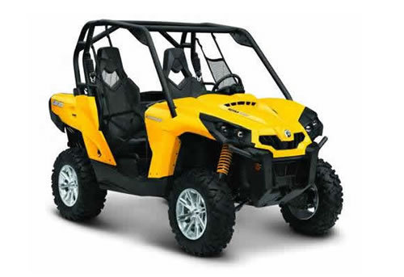
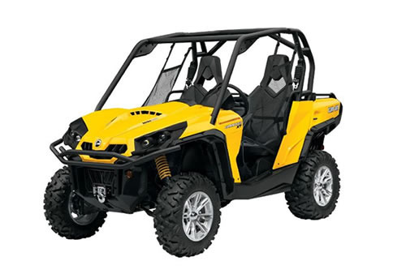

| Can-Am Commander service manual repair 2011-2012 800R/1000 | |
 |
Instant download of the factory repair manual for the Can-Am Commander utv. Covers 2011 800R/1000 models and 2012 1000 LTD models. 468 pages. |
 |
| Can-Am Commander service manual repair 2013 800R/1000 | |
 |
Instant download of the factory repair manual for the 2013 Can-Am Commander utv. Covers 800R and 1000 models. 489 pages. |
|